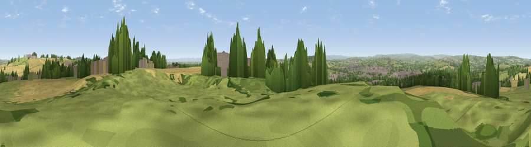

Viewpoint near Coundon
#15147 in England · top 34% of its area beats it · near CoundonWhere it is
The exact computed spot (NZ 23325 29375). Click the marker for map links.
The view, rendered

A 360° render of this exact spot computed from the terrain model, tree cover and land cover — summer colours, afternoon light, calibrated against photographs of famous viewpoints. Real trees, hedges and buildings will differ in detail.
The panorama
Grey silhouette: terrain skyline in each direction (720 bearings, Earth curvature and refraction included). Dashed green: skyline with trees (+15 m) and buildings (+8 m) as obstacles. Blue strip: how far the ground is visible on each bearing.
Where the view opens
Wedge length = distance to the farthest visible ground on that bearing (vegetation-aware). Rings at 10, 25 and 50 km.
What fills the view
39% grassland · 29% cropland · 20% woodland · 12% built-up
Angular shares of the visible panorama (visual magnitude), not map area. Landscape diversity 0.57 (0–1 Shannon).
Key numbers
More beautiful places nearby
The staircase of upgrades: each row has a higher view potential than everything closer. Driving times are estimates from straight-line distance, calibrated against real road routing — check an actual route before setting out.
| Place | Direction | Drive | Score |
|---|---|---|---|
| Westerton Hill | NNE · 2 km | ~5 min | 69.0 |
| Viewpoint near St Helen Auckland | SW · 5 km | ~12 min | 70.3 |
| Viewpoint near Quarrington Hill | NE · 13 km | ~24 min | 73.1 |
| Viewpoint near Eggleston | WSW · 22 km | ~37 min | 76.0 |
| Pontop Pike | NNW · 25 km | ~40 min | 77.8 |
| Viewpoint near Newton Under Roseberry | ESE · 33 km | ~51 min | 78.3 |
| Viewpoint near Lazenby | ESE · 35 km | ~53 min | 82.1 |
| Viewpoint near Lazenby | ESE · 35 km | ~53 min | 86.4 |
54.65893, -1.63996 · source: screening · position refined by local search. Computed location — check access rights before visiting.